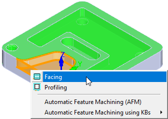
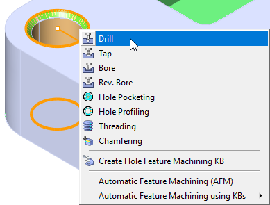

You can right-click on items in your Features tree to perform various operations. 2 Axis and 3 Axis toolpath operations. An example right-click menu is shown below along with a list of the types of operations you can perform. The options available are similar to performing a right-click on a feature in your part model (see the topic Interactive Feature Machining (IFM) from Part Features shown below).
|
After you have performed either AFD or IFD on your part model, you can left-click on a part feature to select a toolpath operation that supports that feature type. The options available are similar to performing a right-click on items in the Feature Tree (see the topic Interactive Feature Machining (IFM) from the Features Tree shown above).  Right-click options on a Prismatic Pocket feature  Right-click options on a Hole feature |